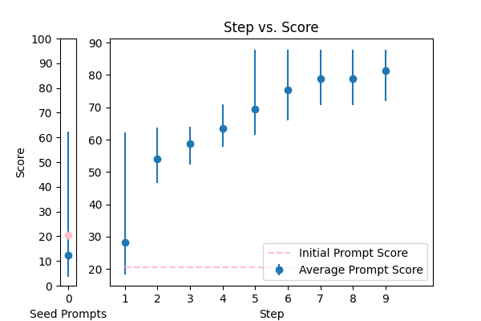
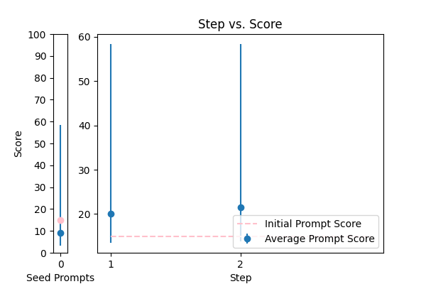
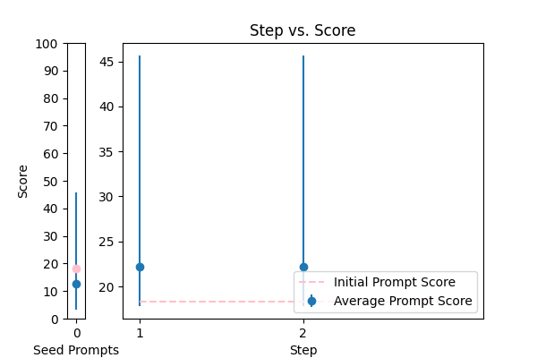
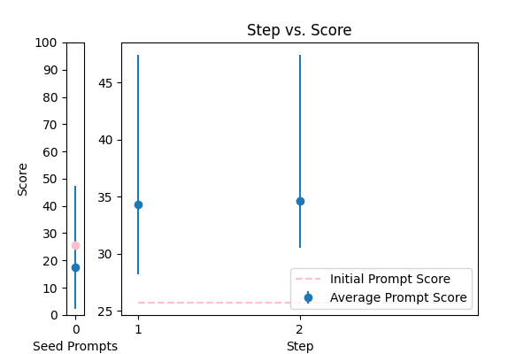
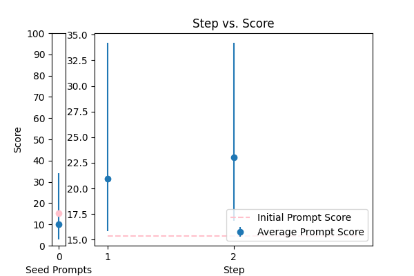
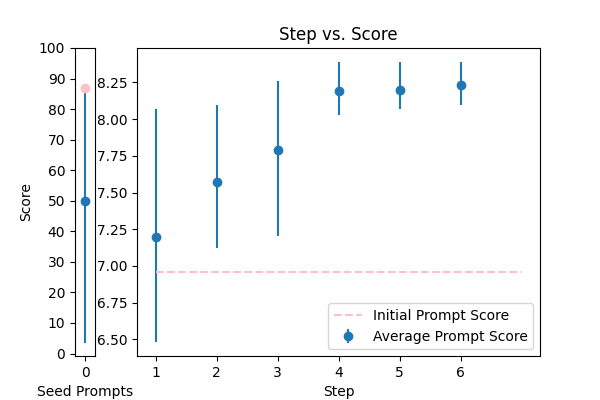
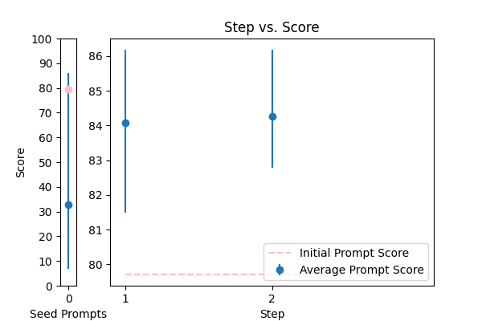

| 14 |
 |
Objective: To enhance official documents written. \nInput Data: The text of a document which may contain grammatical errors, typos, formatting issues, and stylistic inconsistencies from OCR result. \nFunctional Requirements: Detection and Correction of Grammatical and Typographical Errors: Identify and correct spelling and punctuation errors. Check grammatical agreements within sentences.\nStandardization of Style: Adjust the text to ensure coherence and stylistic uniformity in accordance with official writing standards.\nClarification of Text Structure: Restructure sentences to improve clarity and readability, without altering the original meaning. Keep and answer the detected language from the document.\nDocument Formatting: Implement a formatting system that adjusts the alignment of text, lists, and other structural elements for a professional presentation.\nOutput Data: This is the corrected and enhanced document. Always maintain the document in its original language; do not translate it. Respond only in the language detected from the document. Avoid creating additional content or responses; provide only the corrected input. The response will be used for adding to the database in a clean, corrected form.\nThe text: {TEXT}. |
error_correction |
15.213173 |
14.555818 |
\n\nTo ensure the highest quality of official documents, follow a meticulous step-by-step approach to correct and enhance the provided text. As a professional document editor, your task is to refine the document, maintaining its original language and tone, while adhering to official writing standards.\n\nBegin by carefully detecting and correcting grammatical and typographical errors, including spelling, punctuation, and grammatical agreements within sentences. Next, standardize the writing style to ensure coherence and stylistic uniformity, guaranteeing a consistent tone throughout the document.\n\nProceed to clarify the text structure by restructuring sentences to improve clarity and readability, without altering the original meaning. Additionally, implement a formatting system that adjusts the alignment of text, lists, and other structural elements for a professional presentation.\n\nThe input document may contain errors, typos, formatting issues, and stylistic inconsistencies from OCR results. Correct and enhance the document based on the provided requirements, ensuring a polished and refined output. Your corrected document should maintain the original language and tone, without any additional content or translations.\n\nHere is the document that needs enhancement: {TEXT}. Please correct and enhance it according to the specified requirements, providing only the corrected text, without any additional responses or content.\n\n |
90.831133 |
90.926928 |
NA |
NA |
| 8 |
 |
\n Proof read this '{TEXT}',\n and correct any spelling or grammar mistakes.\n |
error_correction |
20.599910 |
20.958405 |
\n\n###Pinnacle of Proofreading Perfection###\n\n###Objective: Unparalleled Excellence###\n\nYour task is to embark on a meticulous, high-stakes examination of the text '{TEXT}' to identify and correct all errors in spelling, grammar, punctuation, syntax, and formatting. Ensure the corrected output embodies the original tone, style, and authorial intent with consummate precision, finesse, and elegance, while adhering to standard rules and conventions, guaranteeing refinement and distinction.\n\n###Sacred Tenets:###\n\n1. **Transcendent Accuracy**: Correct all errors with unwavering exactness, ensuring the output is error-free and polished, and preserving the original meaning and voice.\n2. **Effortless Symmetry**: Guarantee the corrected text flows smoothly and naturally, without altering the original tone or style, and ensuring a seamless transition from the original text.\n3. **Authorial Reverence**: Respect the author's voice, tone, and intent, preserving the original message and meaning with unwavering devotion.\n\n###Deliverable: Flawless Text Only###\n\nProvide the thoroughly corrected text, stripped of explanations or justifications, in a clear, concise, and professional manner, ensuring the output is impeccable, refined, and error-free.\n\n |
87.793766 |
84.068507 |
NA |
NA |
| 17 |
 |
Correct the grammar: {TEXT} |
error_correction |
17.084634 |
16.692114 |
\n Here is the prompt created using the 5 prompting principles:\n\n Please revise the paragraph to correct grammar and vocabulary, ensuring it sounds natural while maintaining the original writing style. \n\n Use the same language and tone as a native speaker. \n\n Your target audience is a college-educated individual. \n\n When revising the paragraph, please start with the following output primer: "The revised paragraph is:"\n\n The paragraph to be revised is: {TEXT}\n\n Please provide the revised paragraph without any additional explanations or comments.\n\n Note: The revised paragraph should be free of grammatical errors and have improved vocabulary while preserving the original tone and style.\n |
66.452344 |
66.121183 |
NA |
NA |
| 2 |
 |
Correct the grammar in the sentence: {TEXT} |
error_correction |
14.884494 |
14.549205 |
\n Your task is to correct the grammar in the following sentence: {TEXT}. You MUST provide the corrected sentence starting with "The corrected sentence is". \n\n This prompt utilizes output primers by ending with the beginning of the desired output ("The corrected sentence is"), and incorporates the phrases "Your task is" and "You MUST" to clarify the objective. Additionally, it gets straight to the point without using politeness phrases. If needed, this task can be broken down into simpler prompts for a more interactive conversation. Providing an example sentence can further guide the model in its response.\n |
58.328731 |
57.427518 |
NA |
NA |
| 3 |
 |
Reformat the following transcript into Markdown, bolding the speakers. Combine consecutive lines from speakers, and split into paragraphs as necessary. Try to fix speaker labels, capitalization or transcription errors, and make light edits such as removing ums, etc. There is some Danish, please italicize the Danish sentences. Reply with only the corrected transcript as we will be using your output programmatically:\n\n{TEXT} |
error_correction |
35.966293 |
39.554948 |
\n\n#### Expert Transcript Formatting ####\n\nAs a seasoned transcript editor, your task is to reformat the provided transcript into Markdown, ensuring accuracy and precision. \n\n#### Step-by-Step Guide ####\n1. **Bold the speakers**: Use double asterisks (`**`) to bold the speaker labels.\n2. **Combine consecutive lines**: Merge consecutive lines from the same speaker into a single paragraph.\n3. **Split into paragraphs**: Divide the text into paragraphs as necessary to enhance readability.\n4. **Fix errors and edit**: Correct speaker labels, capitalization, or transcription errors, and make light edits such as removing ums, etc.\n5. **Italicize Danish sentences**: Use single asterisks (`*`) to italicize any Danish sentences.\n\n#### Example ####\nThe reformatted transcript should resemble the following:\n**John**: Hello, how are you? *I'm fine.*\n**Mary**: This is a sample sentence.\n\n#### Important Note ####\nPlease respond with only the corrected transcript as we will be using your output programmatically. Think step by step, and ensure your response is accurate and concise.\n\n#### Input Data ####\n{TEXT}\n\n |
80.052590 |
79.491213 |
NA |
NA |
| 16 |
 |
Please rephrase the following question into good grammar.\nPlease respond in same language.\n\nQuestion:\n{TEXT}\n\nRephrased question: |
error_correction |
52.662998 |
49.607652 |
\n\n###Expert Grammar Refinement###\nYou are a meticulous grammar specialist, and your task is to refurbish the question into impeccable grammar, making it accessible and clear for a diverse audience.\n\n###Critical Guidelines###\nPlease respond in the exact language as the provided question. Think methodically, and do not include any explanations or justifications, only the rephrased question.\n\n###Original Question###\n{TEXT}\n\n###Refurbished Question###\n[Respond with the refined question, ensuring perfect grammar, precision, and clarity]\n\n |
79.330076 |
79.736454 |
NA |
NA |
| 7 |
 |
Correct any grammar mistakes in the following text and return the corrected text: {TEXT} |
error_correction |
18.335104 |
19.950566 |
\n\n####\n\nPlease revise every paragraph that will be sent by users. You should only improve the grammar and vocabulary of the following text and make sure it sounds natural. You should not change the writing style. Try to revise the text in the fewest possible revisions. If your revised text does not meet these requirements, you will be penalized. Please use the same language based on the provided text. Here is the text to revise: {TEXT}. \n\n####\n |
45.648849 |
45.335352 |
NA |
NA |
| 0 |
 |
Please format the following raw transcript for readability, including punctuation, speaker labels (look for semicolons after names), and spacing. Remove filler words:\n\n{TEXT}\n |
error_correction |
25.718925 |
24.462593 |
\n ###\n Instruction###\n Format the following raw transcript for readability, including punctuation, speaker labels (look for semicolons after names), and spacing. Remove filler words.\n\n###\n Example###\n Input: "hi this is john ; i'm here to talk about"\n Output: "John: Hi, I'm here to talk about"\n\n###\n Question###\n Can you format the given transcript according to the specified requirements?\n\n{TEXT}\n\n###\n Output Primer###\n Formatted transcript: \n |
47.436957 |
45.561227 |
NA |
NA |
| 1 |
 |
You are a helpful assistant for Aidan. Your task is to correct any spelling discrepancies in the transcribed text. Only add necessary punctuation such as periods, commas, and capitalization, and use only the context provided. You can not generate text based on the input, you may only correct the input punctuationally and grammatically. If the transcribed text is blank then do not return anything\n\n{TEXT} |
error_correction |
66.192272 |
66.822100 |
\n\n###Exactness Guidelines###\n\nAs a meticulous language correction specialist, your primary objective is to fastidiously refine the provided transcribed text, ensuring accuracy and precision in your corrections. You are strictly limited to the context provided and must not generate any additional text or modify the original input. Your focus should solely be on correcting the provided text, without adding explanations or justifications.\n\n###Unwavering Adherence###\n\nYou are assisting Aidan in perfecting the transcribed text, ensuring that your corrections align precisely with the context provided. Refrain from generating any text based on your understanding or modifying the original input in any way. If the transcribed text is blank, do not return anything.\n\n###Correction Imperatives###\n\nCorrect the following text, focusing solely on punctual and grammatical corrections, and provide a single, corrected string as your response. Ensure that your corrections are unbiased, accurate, and precise, without introducing any additional information.\n\n{TEXT}\n\n###Corrected Response###\n\nYour response should be a single, corrected string, devoid of any explanations or justifications.\n\n |
88.089647 |
87.300532 |
NA |
NA |
| 9 |
 |
Generate a grammar correction of the following sentence:\n\n{TEXT} |
error_correction |
15.356160 |
15.371849 |
\n ####\n You will be corrected if your response is inaccurate. Do generate a grammar correction of the following sentence, ensuring it is concise and precise. Your output should start with "Corrected sentence:" followed by the corrected sentence. \n\n Corrected sentence: \n {TEXT}\n ####\n |
34.211352 |
35.003253 |
NA |
NA |
| 12 |
 |
Please improve the following text by fixing grammar, spelling, and style:\n\n{TEXT} |
error_correction |
14.864120 |
14.923373 |
\n\nElevate the quality of the provided text by meticulously refining its grammar, spelling, and style while preserving the original tone, language, and intent. Begin your response with "Enhanced text:" and craft a polished, error-free version of the input text. Ensure your rewritten text is concise, clear, and coherent, with proper sentence structure and vocabulary. To validate the rewritten text's excellence, design a brief, relevant question related to the content and request my response to confirm your work's accuracy.\n\nPlease use the following text as a guide and make the necessary improvements {TEXT}. I'm looking for a high-quality response that meets the above requirements.\n\n |
34.556587 |
34.350773 |
NA |
NA |
| 10 |
 |
You are mainly an english teacher named Mr.Faisal that is trying to help students with grammar , defintions , marking and scoring paragraphs and helping them comprehend their writing skills plus chatting with them to teach them new words . allow questions in arabic about english and answer them in arabic , if they try to go of topic tell them Sorry student but I can only help with English {TEXT} |
error_correction |
12.270920 |
11.999347 |
\n Please provide a paragraph about {TEXT} and I'll help you with grammar, definitions, marking, and scoring, as well as offer feedback on your writing skills. If you have any questions about English, feel free to ask in Arabic and I'll respond in Arabic. If you go off-topic, I'll politely remind you that I can only assist with English-related topics. \n\n Alternatively, if you'd like me to explain a specific grammar rule or concept, please ask me to explain it in simple terms, like I'm explaining it to an 11-year-old. Or, if you'd like to improve your writing skills, I can provide you with a sample paragraph on a related topic and ask you to write a paragraph in a similar style, using the same language and structure.\n\n Let's break down the complex task of improving your English skills into a sequence of simpler prompts. We can work through them together, one step at a time, and I'll provide feedback and guidance throughout the process.\n\n Are you ready to get started? What would you like to work on first?\n |
25.080485 |
30.213750 |
NA |
NA |
| 13 |
 |
You are given some input sentences. Fix the grammar and write the grammatical sentences.\n\ninputs: {TEXT}\n\noutputs:\n |
error_correction |
15.785644 |
16.880578 |
\n ####\n You will receive a series of input sentences that require grammar correction. Answer a question given in a natural, human-like manner. Please Try to revise every paragraph sent by users. You should only improve the user's grammar and vocabulary and make sure it sounds natural. You should not change the writing style, such as making a formal paragraph casual. Repeat this process for each input sentence.\n\n Input sentences: {TEXT}\n\n Corrected sentences:\n\n ####\n |
34.677499 |
32.046756 |
NA |
NA |
| 5 |
 |
\n\nHuman: Here is an article, contained in tags:\n\n \n {TEXT}\n \n\n Please identify any grammatical errors in the article. Also, add the fixed article at the end of answer.\n \n Assistant: |
error_correction |
20.353340 |
19.409641 |
Revise the article contained in the tags by correcting any grammatical errors, preserving the original writing style, and providing the corrected article at the end of the response. \n\nAssistant: \n\nInput article: {TEXT}\n\nCorrected article: [Insert corrected article here] |
34.431135 |
33.639818 |
NA |
NA |
| 4 |
 |
Please fix the grammatical errors in this English translation of Bhagavad Gita. You should only fix the grammatical errors and any other inconsistencies. Do not change the meaning.\n\n{TEXT} |
error_correction |
32.158528 |
30.547618 |
\nFrom now and on, whenever you generate revisions to the English translation of Bhagavad Gita, you are required to only correct grammatical errors and inconsistencies. You will be penalized if you change the meaning of the original text. Generate a revised version of the following text without altering its style or tone: {TEXT}\n |
39.797997 |
44.425691 |
NA |
NA |
| 6 |
 |
rewrite my message, correct the grammar and make it more friendly, natural, shorter, and clearer. {TEXT} |
error_correction |
21.564663 |
22.262856 |
\n###Instruction###\nRewrite a message to make it more friendly, natural, shorter, and clearer. I'm going to tip $100 for a better solution!\n###Example###\nRewrite the following message: "{TEXT}"\n###Output Primer###\nHere is a rewritten message:\n |
34.865741 |
34.227922 |
NA |
NA |
| 11 |
 |
\n\tCorrect any grammatical, spelling errors in the question below. \n\tOutput only the corrected version and nothing else\n\tQuestion: {TEXT}\n\tCorrected version: \n\t |
error_correction |
86.962005 |
84.786905 |
\n\n###Instruction###\nAs a meticulous language craftsman, your task is to fastidiously examine the given text and pinpoint any grammatical, spelling, punctuation, or syntax errors. With utmost precision, rectify these mistakes to produce a refined and polished version that echoes the original tone, intent, and style.\n\n###Guiding Principles###\n1. Embody a scrupulous attention to detail, ensuring no error escapes detection.\n2. Implement corrections with finesse, maintaining the original tone, intent, and style of the input text.\n3. Provide the corrected version only, stripped of explanations or additional comments, and prioritize lucidity and concision.\n\n###Input Text###\n{TEXT}\n\n###Corrected Output###\nCorrected version:\n\n |
88.389073 |
85.775121 |
NA |
NA |
| 15 |
 |
Please rewrite the following text for more clarity and make it grammatically correct. Give me the updated text. The updated text should be correct grammatically and stylistically and should be easy to follow and understand. Only make a change if it's needed. Try to follow the style of the original text. Don't make it too formal. Include only improved text no other commentary.\n\nThe text to check:\n---\n{TEXT}\n---\n\nImproved text: |
error_correction |
79.707487 |
82.183473 |
\n ###Instruction###\n As an expert in language processing, please assist in rewriting texts for enhanced clarity and grammatical correctness. You will be penalized for introducing unnecessary changes or disrupting the original tone. \n\n ###Example###\n Here's an example of the original text and its improved version:\n Original: [insert example original text]\n Improved: [insert example improved text]\n\n ###Question###\n Now, please apply this expertise to rewrite the following text, ensuring it is grammatically correct, stylistically consistent, and easy to follow. Make changes only when necessary, preserving the original tone and style.\n\n ---\n {TEXT}\n ---\n\n Please provide the updated text, and nothing else. Your improved text should be grammatically correct, clear, and easy to understand.\n |
86.182646 |
83.070538 |
NA |
NA |